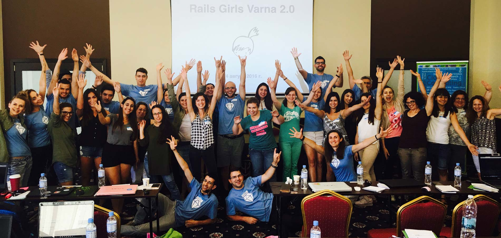

Rails Girls за втори път във Варна!
Rails Girls е безплатен целодневен уъркшоп, насочен към дами с нулев или минимален опит в програмирането и технологиите.
Основната ни цел е да ви покажем, че програмирането е забавно, интересно, вълнуващо и много полезно умение, като ви помогнем да създадете своето първо уеб приложение, в приятна атмосфера и под ръководството на опитни инструктори. Ще ви ориентираме и вие ще решите дали и как да продължите.
Събитието приключи. Благодарим ви!
Извести ме за последващи издания →
Ако желаете да ви изпращаме известия за предстоящи Rails Girls събития, или важни новини около тях, абонирайте се за новинарския ни бюлетин. Изпращаме няколко писма на година.
Следете ни в Twitter или Facebook за новини около събитието. Присъединете се в групата Rails Girls Sofia.
Очакваме всички, присъстващи на събитието, да са се запознали с и да спазват нашия кодекс на поведение.
Ще ви покажем основи на дизайна, прототипизирането и програмирането за уеб с помощта на нашите инструктори.
Имате нужда единствено от лаптоп, любопитство към нови неща и щипка въображение!
Искате да помогнете? Екипът ни от доброволци е отворен към всякакви предложения. Пишете ни по всяко време.
Ще ви връчим чук и ще започнете да виждате пироните около вас.
Под ръководството на опитните ни и пълни с ентусиазъм за обяснения инструктори, в приветлива и отпускаща атмосфера, ще направим едно семпло уеб приложение, с цел да ви покажем, че:
Ще се постараем да постигнем и за следните неща:
Няма да се научите да програмирате.
За съжаление, това не може да стане за няколко дни. Съществуват, обаче, примери за участници в Rails Girls събития, които са постигнали "от нула до програмист за една година". С други думи, това е напълно възможно и зависи изцяло от мотивацията ви и от готовността да отделяте време след събитието, за да продължите да се занимавате и развивате.
Интересувам се специфично от Ruby и Ruby on Rails. За мен ли е това събитие?
За кандидатите, които имат повече опит с технологиите, с програмиране и/или следващи технически насочени специалности в университет, които се интересуват специфично от Ruby и Ruby on Rails, този уъркшоп не е подходящ. В случая, избраната технология е просто средството, което инструкторите ще използват, за да обяснят основите на програмирането на участниците.
Може би сте по-подходящи за инструктор – непременно ни пишете :) Допълнително, по-голямата част от екипа са хора с голям опит в сферата на Ruby, Rails и програмирането за уеб и биха могли да ви ориентират и насочат как да започнете да напредвате с тези технологии.
Първото издание на Rails Girls Varna се случва съвместно с организацията на VarnaConf 2016.
VarnaConf е техническа конференция с безплатен вход, част от IT Турнето - пътуващи из България конференции, инициирани от група ентусиасти. VarnaConf 2016 е четвърто поредно издание и се организира съвместно с VarnaLab и с подкрепата на Chaos Group.
От името на целия екип, благодарим на всички участници в Rails Girls Varna 2.0!
| 9:30 - 10:00 |
Регистрация и кафеВреме е за събуждане и зареждане с енергия. Чака ни дълъг и вълнуващ ден.Нямате нужда от специални идентификационни знаци, освен името си. Носете си лаптоп и не закъснявайте :) |
|---|---|
| 10:00 - 10:30 |
Добре дошли!Няколко думи за събитието, приветствия от нашите домакини и спонсори, процедурни разяснения, програма.(видеозапис от предишното издание) |
| 10:30 - 11:00 |
Блиц-увод в програмирането и уеб приложениятаОсновни термини и концепции. Ориентация.(видеозапис от предишното издание) |
| 11:00 - 13:00 |
УъркшопЗапочнете вашия първи уеб сайт с лъвски скок! |
| 13:00 - 13:30 | Обяд |
| 13:30- 13:50 |
Lightning talks от инструкторите или Bentobox играЗа съвземане след обяда. |
| 13:50 - 16:00 |
УъркшопДовършете вашето уеб приложение. |
| 16:00 - 16:10 |
ЗакриванеЗаключителни слова, как да продължим, благодарности.(видеозапис) |
| 16:10 - 16:15 |
Групова снимкаПо традиция, снимка на всички за спомен.(видеозапис) |
х-л "Черно море" (сайт ↗)
бул. "Сливница" 33, Варна
Конферентна зала 1 (на втория етаж, по стълбите вдясно)
Rails Girls Varna е събитие с некомерсиална, идеална цел и се организира на доброволен принцип, с подкрепата на екипа на Дигиталната национална коалиция (ДНК), екипа на IT-турнето и местна подкрепа.
Бихте помогнали? Търсим спонсори и партньори за това некомерсиално събитие. Пишете ни!
Rails Girls Varna ще е осмо поредно издание на Rails Girls събитията в България и второ поред във Варна. Може да научите повече за предишните на страниците им.
Колко струва участието? Безплатно е! Достатъчни са единствено вашето вдъхновение, мотивация и ентусиазъм!
За кого е това събитие? За жени и момичета на произволна възраст, имащи единствено основни познания за работа с компютър, но с интерес в технологиите и желание да учат нови неща. В други издания на това събитие по света са участвали дами на всякаква възраст. Събитието ще е на български, но спецификата на проблемната област изисква да може да се оправяте прилично с четене и разбиране на английски текстове. Носете си лаптоп.
Допускат ли се мъже? Интересът към Rails Girls събитията обикновено е много голям, а местата са ограничени и дамите са с предимство. Ако има места и сте момче, може да ви допуснем, но трябва да водите и любопитна дама с вас :)
Как ще протече събитието? Важна част са уъркшоп сесиите. Те ще представляват работа на малки групички от по няколко участника и един инструктор, с цел максимално индивидуализиран подход спрямо участниците. Освен тези сесии, програмата на събитието е разнообразна и включва забавни и разтоварващи занимания. Най-важното е, че ще бъде весело!
Какви технологии ще се използват? За изработката на уеб приложението ще се използва популярната и мощна библиотека с отворен код Ruby on Rails. Ще се занимаваме с HTML, CSS, Command prompt/Terminal и езика за програмиране Ruby.
Аз мога да програмирам - как да помогна? Винаги търсим инструктори и спонсори. Ако имате опит в уеб програмирането, дори да не е с Ruby on Rails и желание да обяснявате на начинаещи, пишете ни. Може също така да погледнете ръководството за инструктори.
Как ще бъдат одобрявани регистрациите? Поради очаквания голям интерес и ограничените места, се налага да приложим процес по селекция над кандидатурите за участие. Тя ще се извърши от организационния екип. На първо място, ще одобряваме или отхвърляме кандидати на база на отговорите им във формата за регистрация. Допълнителни указания ще дадем в самата регистрационна форма. На второ място, ще имат предимство тези от вас, подали одобрена заявка за регистрация първи.
Ще има ли видео записи за хората, които не могат да се включат на място?
Няма да има излъчване на живо или видеозаписи на цялото събитие, тъй като в основата на събитието са уъркшоп сесиите, които ще се провеждат в групички от по няколко участника и един инструктор. Презентационните сесии са сведени до минимум, като ще се стремим към по-неформална и приветлива атмосфера. Целта е максимално индивидуализиран подход. За съжаление няма как да излъчваме 15 паралелни видеопотока, като същевременно точно заради индивидуализирания подход няма гаранция, че дадено видео ще е полезно на някого.
Основна идея на събитието е да се присъства, да се участва и да се зарази човек с духа му — "get excited and make things".
Имате други въпроси? Не се колебайте да ни питате във Facebook, Twitter или директно на имейла на организаторите.
Предстоят промени в екипа.
 Димитър Димитров
организатор
@mitio
Димитър Димитров
организатор
@mitio
 Димитър Смилянов
инструктор, организатор
@ShadowmarN
Димитър Смилянов
инструктор, организатор
@ShadowmarN
 Васил Колев
магьосник
@krokodilerian
Васил Колев
магьосник
@krokodilerian
 Борислав Трайков
инструктор
Борислав Трайков
инструктор
 Васил Йосков
инструктор
Васил Йосков
инструктор
 Добромир Иванов
инструктор
Добромир Иванов
инструктор
 Емил Гелев
инструктор
Емил Гелев
инструктор
 Михаил Великов
инструктор
Михаил Великов
инструктор
Текстът е базиран на Berlin Code of Conduct. Преводът е на Андрей Радев.
Основна цел на всички конференции и групи, които използват този Кодекс на поведение, е да бъдат отворени към колкото се може по-голям кръг от участници от всякакъв тип.
Затова полагаме усилие да предоставим приятелска, безопасна и уютна атмосфера за всички, независимо от пол, сексуална ориентация, възможности, етнически произход, социално-икономически статут и религия (или липсата на такава).
Кодексът на поведение обобщава очакванията ни за поведението на всички участници, както и последствията от нарушаването му.
Вторична роля на този Кодекс е да увеличи членството в open [source/culture/tech] като окуражи участниците да разпознаят и подсилят връзката между действията ни и ефекта им върху общността ни.
Общностите са огледала на обществата, в които съществуват, и са нужни позитивни действия за да се противопоставим на многото форми неравенство и злоупотреба с власт, които съществуват в обществото.
Ако видите някой, който полага извънредно усилие да поддържа общността ни отворена, приятелски настроена и окуражаваща всички членове да участват в максимална степен, искаме да знаем за това.
Недопустимо поведение включва: заплашителна, подтискаща, тормозяваща, дискриминираща, обидна или унизителна реч или поведение от страна на който и да е участник в общността ни онлайн, в което и да е от свързаните събития или лични комуникации, случващи се в контекста на общността ни. Местата на провеждане на събитията може да бъдат споделени с външни посетители; моля, уважавайте всички присъстващи.
Тормоз включва: нараняващи или предубедени вербални или написани коментари свързани с пол, сексуална ориентация, раса, религия, физически способности; неподходяща употреба на голота и/или сексуализирани образи в публични пространства (включително слайдове в презентации); преднамерено заплашване или следене; нежелана фотография или видеозапис; продължително прекъсване на лекции и други събития; неподходящ физически контакт и нежелано сексуално внимание.
Недопустимо поведение от който и да е член на общността, включително спонсори и организатори, няма да бъде толерирано. Всеки, който е помолен да спре недопустимото поведение, се очаква да го направи веднага.
В случай, че член на общността се държи недопустимо, организаторите на общността може да вземат каквото действие решат за подходящо, включително временно изгонване или постоянно премахване от общността без предупреждение (и без парично обезщетение в случай на платено събитие).
Ако сте свидетел или жертва на недопустимо поведение, или имате друг проблем, неописан в този текст, моля уведомете някой от организаторите на общността колкото се може по-скоро. На тази страница можете да намерите контакти на организатори за всеки от поддръжниците на този Кодекс на поведение. Допълнително, организаторите на общността ще помогнат на участниците да се свържат с местната полиция или да помогнат по друг начин на жертвите на подобно поведение да се чувстват в безопасност. В контекста на събития на живо, организаторите също ще предоставят придружители ако жертвата на тормоз го пожелае.
Ако чувствате, че сте бил грешно или нечестно обвинен в нарушение на този Кодекс, уведомете някой от организаторите с кратко описание на оплакването си. То ще бъде обработено спрямо правилата на общността.
Очакваме всички участници в общността (лектори, платени или не; спонсори; други гости) да следват този Кодекс във всички седалища на общността — онлайн и лице-в-лице — както и във всички лични комуникации, свързани с общността.